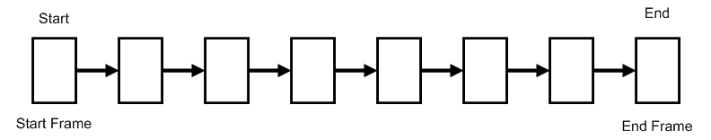
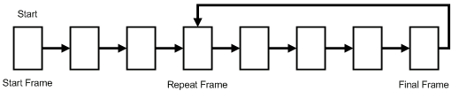
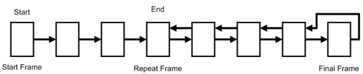
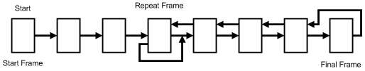
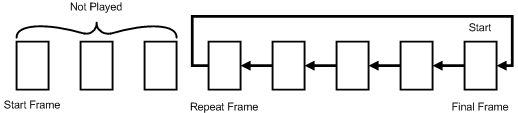

Animation Playback Mode
Description
In general, the Animation Controller has two methods for playing back animations, one-time playback mode and repeat playback mode. These playback modes are explained below.
One-time Playback Mode

This mode plays back the animation once. It stops the animation after the final frame is played.
Repeat Playback Mode

This mode plays back the animation repeatedly. The animation has a repeat frame. After playing back the final frame it repeats animation playback by jumping to the specified repeat frame. Frames between the animation start and repeat frame are played back only once.
Loop Playback Mode

After playing back the final frame, the animation is played backed in reverse to the repeat frame. After the repeat frame is displayed, reverse playback stops. Frames between the animation start and repeat frame are played back only once.
Loop Repeat Playback Mode

This mode repeats loop playback between the repeat frame and final frame of the animation. Frames between the animation start and repeat frame are played back only once.
Special Playback Feature for Animation
Description
The Animation Controller can perform special playback of animations as shown below.
Reverse Playback

It is possible to play the animation in reverse starting from the final frame. In one-time playback mode the animation stops after playing the first frame. In repeat playback mode, it jumps to the final frame after playing the repeat frame. Therefore, when doing reverse playback in repeat playback mode, the frames from the starting frame to the repeat frame are not played.
Changing the Updated Frame Magnification
The Animation Controller can change the animation update frame magnification when updating an animation. The update frame magnification is specified with an fx32–argument. If the value is more than 1.0 the animation will speed up, and if it is less than 1.0 the animation will slow down. The animation playback speed is multiplied by the update frame magnification in the Controller, and the actual update frame number is determined. A negative value cannot be set for the update frame magnification.
Callback Function Call Feature
The Animation Controller has a feature to call callback functions so the user can carry out processing when a particular frame of an animation is being played. Callback functions can be set up to be called with the three types of timing shown below.
- The callback functions are called every time the cells or multicells that form the animation are switched.
- The callback functions are called when a specified cell or multicell in an animation is displayed.
- The callback functions are called in the final frame of the animation.
Only 1 out of the 4 bytes of data specified by the user can be passed to the callback function.
See Also
None.
Revision History
2004/12/06 Initial version.
CONFIDENTIAL